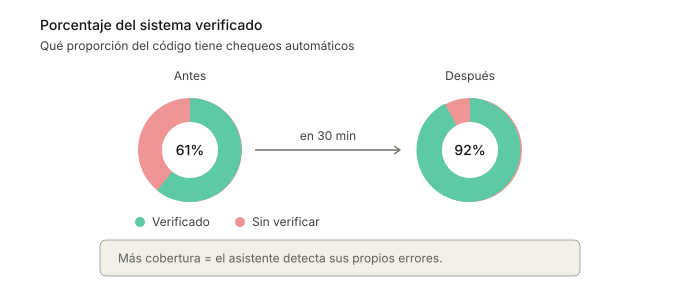

Cuando un programador hace un cambio, el sistema lo verifica antes de incorporarlo. Si esa verificación tarda quince minutos, el programador pasa a otras tareas, revisa emails, pierde el hilo. Si se encontró un error, al volver al código tiene que reconstruir el contexto mental. Esto pasa varias veces al día.
En un cliente con un sistema monolítico de 9 años y un equipo que fue rotando, las verificaciones tardaban 16 minutos o más. Encontramos y corregimos dos problemas principales que llevaban casi la mitad del tiempo, llevando a verificaciones de 10 minutos como máximo.

Para que el tiempo ganado fuera valioso, corregimos además errores que ocurrían aleatoriamente, incrementando la confianza en que un error encontrado sería directamente relevante para el programador. Con tests más rápidos y confiables, el equipo comenzó a ejecutar verificaciones en sus computadoras en lugar de la nube, acelerando aún más la retroalimentación.
En otro caso, un cliente tenía un sistema nuevo generado en buena parte con IA. Descubrimos que solo el 61% del código tenía verificación automática. El resto era territorio sin mapa: los agentes podían hacer cambios, pero ni humanos ni máquinas podían saber fácilmente si eran correctos.
Le pedimos a un agente que agregara verificaciones, archivo por archivo, priorizando los más importantes. Incrementamos la cobertura al 92%. También incorporamos revisiones de estilo automáticas para que el programador no tuviera que hacer ajustes cosméticos después de los agentes.

El ciclo virtuoso
Estos ciclos de verificación automática ayudaron a programadores, pero también a la IA. Un agente que genera código y puede verificar que funcione, corrige solo y sabe cuándo terminó. Uno que tiene que esperar quince minutos (o que no tiene verificaciones), entrega trabajo a medias y le pasa el problema al humano.
Verificaciones más rápidas y más completas hacen que los agentes sean más efectivos, generando un círculo virtuoso. El equipo se mueve más rápido, sin sacrificar calidad.